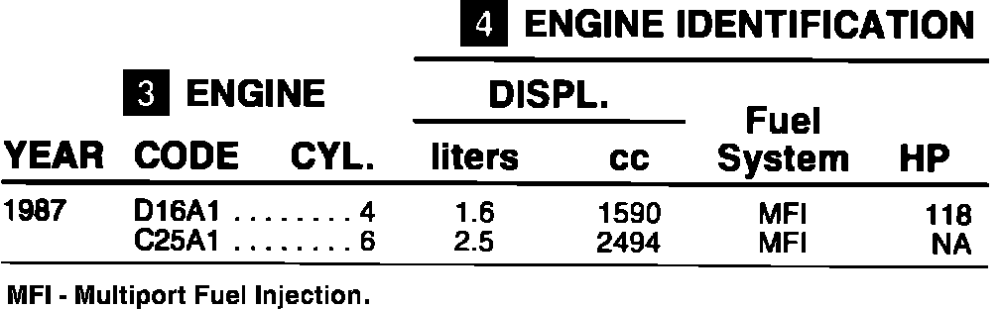

Engine: Application and ID
To identify an engine by the manufacturer's code, follow the four steps designated by the numbered blocks.
V.I.N. PLATE LOCATION:
Left side of hood support member. Also top left side of instrument panel.
(1) MODEL YEAR IDENTIFICATION:
10th character of V.I.N.
1990 - L
1989 - K
1988 - J
1987 - H
1986 - G
(2) ENGINE CODE LOCATION:
Integra, first five characters of engine number, located on flange under the distributor.
Legend, first five characters of engine number, located on timing chain cover below engine oil fill cap.
Fig. 4 Engine Identification - 1987:

(3) ENGINE CODE: In the "CODE" column, find the engine code determined in Step 2.
(4) ENGINE IDENTIFICATION: On the line where the engine code appears, read to the right to identify the engine.